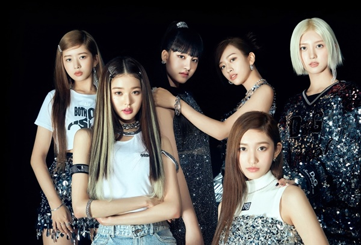

- NewJeans
- IVE
- Dreamcatcher
IVE
Members 가을, 안유진, 레이, 장원영, 리즈, 이서

2021년 12월 1일에 데뷔한 스타쉽엔터테인먼트 소속의 6인조 다국적 걸그룹.
그룹명인 IVE는 'I HAVE'의 축약형인 I'VE에서 유래되었으며,
‘우리가 가진 것들을 모두 당당히 보여 드리겠다.’는 포부를 담았다.
IVE 3rd Single Album 'After LIKE'
2022.08.22

- After LIKE
- My Satisfaction